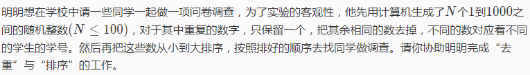
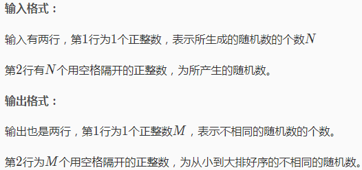
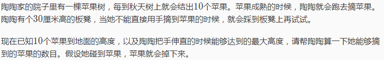
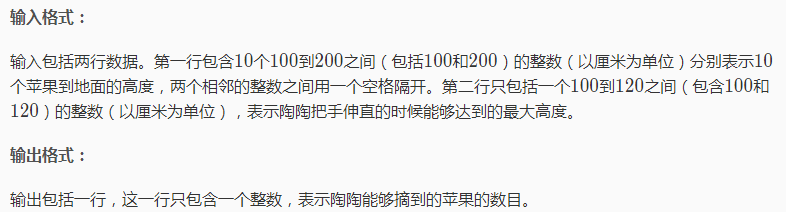
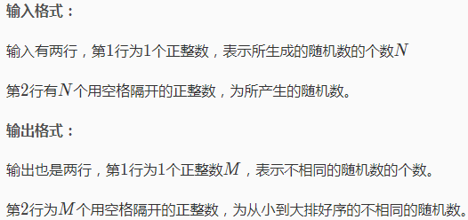
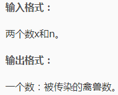
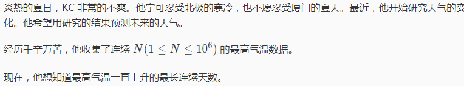
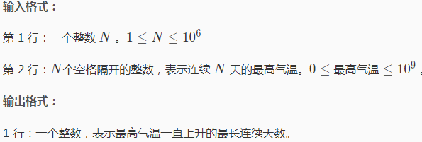

其实此题放在这不太恰当，因为此题表面上是情景模拟，但实际上是排序的底子。
已知输入的数在1~1000范围内，那么我们可以定义一个数组（初始值为0），用输入的数为下标，数值加一（“去重”的关键）；由于需要从小到大排序，所以用for把1~1000都过一遍（枚举），判断每个数组的数值是否为0，不为0，那么输出下标，为0就继续循环，由于从小到大循环输出所以也完成了排序。其实这也是桶排序的思想。
基础不多但常用，也由于常用所以不多扯。接下来就是一种好玩的..。
模拟就像是我们常做的情景应用题，题目给你一个情景但不给具体数据，而让你用代码来实现给定范围内的的变量计算。大体就是这样，一般学过的人都清楚，这里就不多加赘述。下面上题（由于是模拟入门so...例题均为入门题）：
eg1：p1046 陶陶摘苹果


此题给定数据个数及范围，所以在定义上是十分简单的。用for进行数据记录，if进行条件判定若苹果高度小于（陶陶高度+凳子高度）那么结果加一。
1 #include<bits/stdc++.h>
2 using namespace std;
3
4 int a[11],x,s,j;
5
6 int main()
7 {
8 for(int i=1;i<=10;i++)
9 cin>>a[i];
10 cin>>j;
11 for(int i=1;i<=10;i++)
12 if(a[i]<=j+30)
13 s++;
14 cout<<s;
15 return 0;
16 }eg2：P1059 明明的随机数

其实此题放在这不太恰当，因为此题表面上是情景模拟，但实际上是排序的底子。
已知输入的数在1~1000范围内，那么我们可以定义一个数组（初始值为0），用输入的数为下标，数值加一（“去重”的关键）；由于需要从小到大排序，所以用for把1~1000都过一遍（枚举），判断每个数组的数值是否为0，不为0，那么输出下标，为0就继续循环，由于从小到大循环输出所以也完成了排序。其实这也是桶排序的思想。
1 #include<bits/stdc++.h>
2 using namespace std;
3
4 int a[1001],n,k,x[101];
5
6 int main()
7 {
8 int j=0;
9 cin>>n;
10 for(int i=1;i<=n;i++)
11 {
12 cin>>k;
13 a[k]++;
14 }
15 for(int i=1;i<=1000;i++)
16 if(a[i]>0)
17 {
18 j++;
19 x[j]=i;
20 n--;
21 }
22 cout<<j<<endl;
23 for(int l=1;l<=j;l++)
24 cout<<x[l]<<" ";
25 return 0;
26 }eg3：p1634 禽兽的传染病
题目很短

看到这题是不是很easy？然后...
1 #include<bits/stdc++.h>
2 using namespace std;
3
4 int x,n,s;
5
6 int main()
7 {
8 cin>>x>>n;
9 s=1;
10 for(int i=1;i<=n;i++)
11 s=s+s*x;
12 cout<<s;
13 return 0;
14 }如果你是这样做的那么恭喜你在洛谷上的得分为30分（不要问我为什么~~~因为开始我这就是这样！！）（莫名伤心）
开始天真的我以为没毛病，又交了好几遍~~~然后...wa声一片；后来才发现原来——
1 #include<bits/stdc++.h>
2 using namespace std;
3
4 long long x,n,s;
5
6 int main()
7 {
8 cin>>x>>n;
9 s=1;
10 for(int i=1;i<=n;i++)
11 s=s+s*x;
12 cout<<s;
13 return 0;
14 }是我定义的小了，它被爆了。（唉！！！这个答案让我哭笑不得）
eg4：p1567统计天数


看到它我的想法还是很多的，不过CE了，有修改了一番
1 #include<bits/stdc++.h>
2 using namespace std;
3
4 long long n,a[10001],b[1000001],s;
5
6 int main()
7 {
8 cin>>n;
9 int k=1;
10 for(int i=1;i<=n;i++)
11 {
12 cin>>b[i];
13 if(b[i]>b[i-1])
14 k++,a[i]=k;
15 else k=1,a[i]=k;
16 }
17 for(int i=1;i<=n;i++)
18 s=max(a[i],s);
19 cout<<s;
20 return 0;
21 }注：题目出自洛谷https://www.luogu.org/